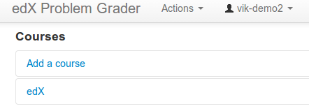
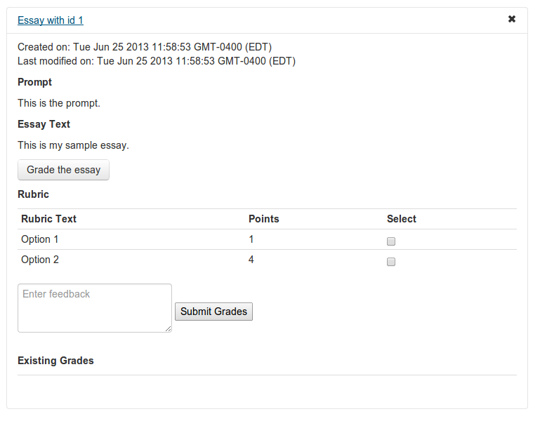

- Follow along at vikparuchuri.github.io/boston-python-ml
- Get the source at github.com/vikparuchuri/boston-python-ml
Who am I?
- Machine learning consultant at edX
- vik.paruchuri@gmail.com
Vik Paruchuri


Let's say that I wanted to give a survey after the talks today and ask the following question:
Why do you want to learn about machine learning?
The responses might look like this:
## 1 I like solving interesting problems.
## 2 What is machine learning?
## 3 I'm not sure.
## 4 Machien lerning predicts eveyrthing.
If I also asked people to rate the talks on a scale of 0 to 2, we would now have text and associated scores:

Let's tokenize the first survey response:
## [1] "I" "like" "solving" "interesting" "problems"
Each word is now a token (similar to string.split(' ')).
Can also extract sequences of words (n-grams). This allows the bag of words model to have some information about word ordering.

Old features:
New features with lowercasing and spell correction:


Coefficients:
## (Intercept) eveyrthing interesting learning
## coefficients 1 -1 1 -1
Let's use this as our "test" text that we will predict a score for:
## 1 I want to learn to solve interesting problems.
Our prediction is 2. In this case, the intercept was 1 and the presence of the word interesting added another 1.
First fold:

Second fold:

Predictions:

import requests
#This queries the top level schema and gets all of the available models, and their associated endpoints.
response = requests.get("http://discern.edx.org/essay_site/api/v1/?format=json")
#Decode the json serialized response into a python object.
rj = response.json()
#Loop through the json object and print out the data.
for model in rj:
print("Model: {0} Endpoint: {1} Schema: {2}".format(model, rj[model]['list_endpoint'], rj[model]['schema']))
#Now, let's try to get the schema for a single model.
response = requests.get("http://discern.edx.org/" + rj['essay']['schema'] + "?format=json")



